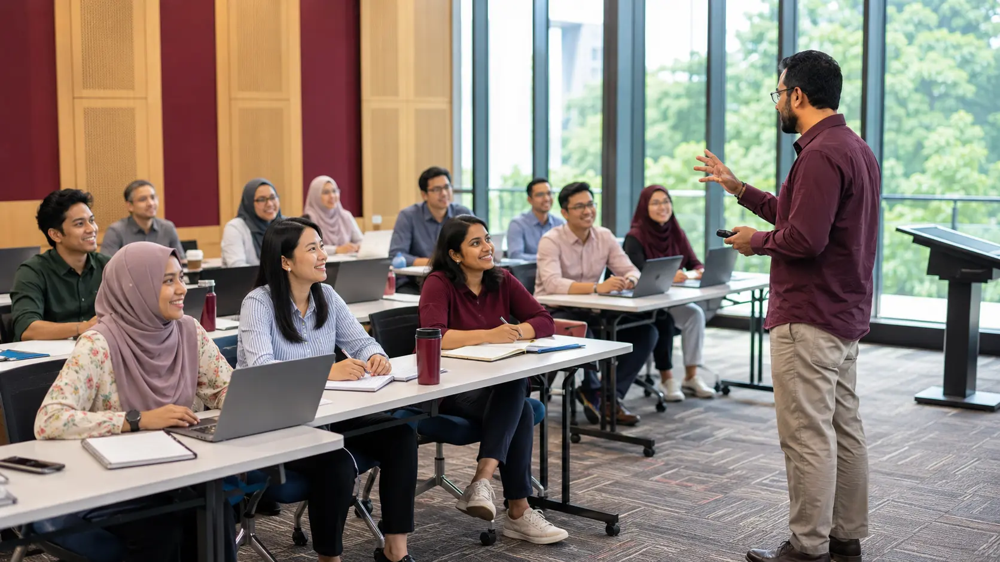

Short conceptual briefings
Quick framing before every hands-on activity.
TENTATIVE PROGRAMME · 24 AUGUST 2026
Duration: One day · Time: 9:00 AM – 5:00 PM · Level: Beginner to intermediate.

ONE FOCUSED DAY · FIVE MODULESFULL SCHEDULE
Each module name above links to its companion page. For the full breakdown of every module, including hands-on tools, numbered exercises and recommended AI tools, see Training Modules →
TRAINING METHODOLOGY
Quick framing before every hands-on activity.
Live demonstrations of selected AI tools.
Using participants' own research topics.
Work through real tasks, alone or in groups.
Presentation, discussion, reflection and Q&A.
24 AUGUST 2026 · UTM JOHOR BAHRU
Continue with the learning materials, AI tools and prompt library curated for this training.
Explore Resources